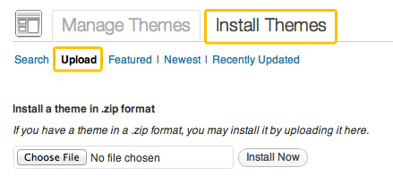
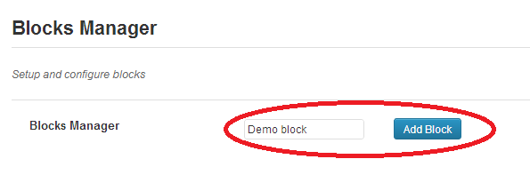
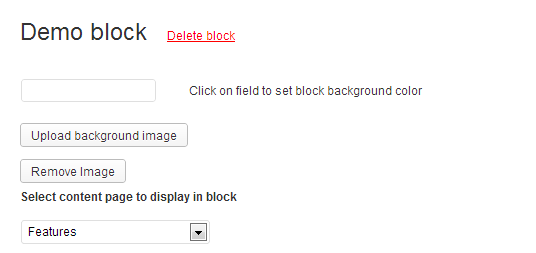
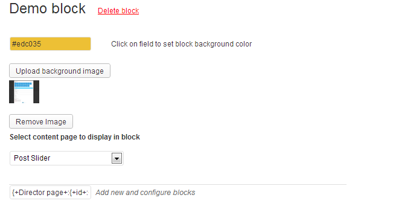
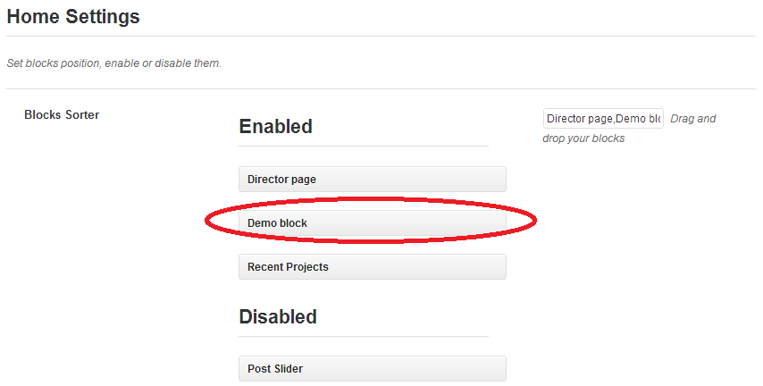
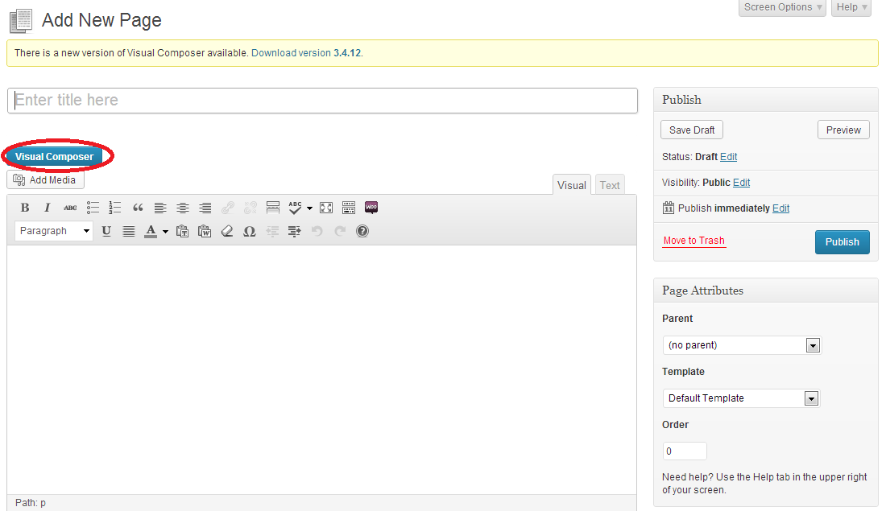
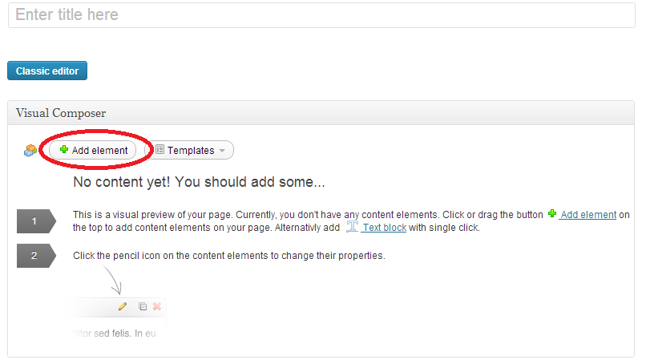
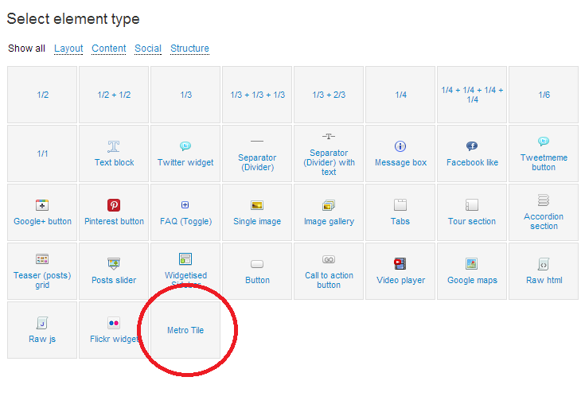
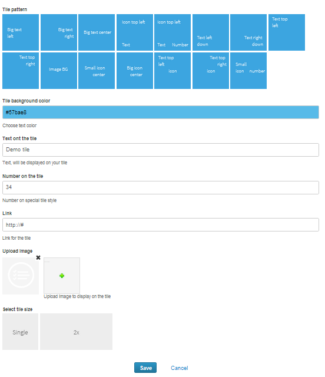
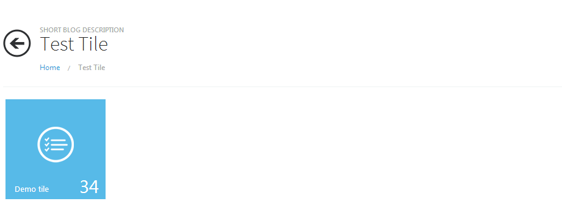

Now choose the .zip file that you have of the theme click “Install Now”

Main options will help you to set basic parameters of your site. Here you can find such options as:
1) Upload favicon
2) Upload logo
3) Boxed Layout
4) Enable social share buttons on single post / page – shows/hides sharing icons on single post pages and single portfolio page.
5) Boxed post slider
7) News slider boxed type – sets one of three post news slider params.
8) Post Excert – configures
9) Tracking Code – code of Google Analytics or other statistic services
10) Custom CSS – extra CSS for your theme.
Styling Options is options pack for styling body and footer, setting its background and font color.
1) Body background color
2) Body font color
3) Upload own background image
4) Background image repeat
5) Fixed body background
6) Footer background color
7) Footer font color
8) Or upload own footer background image
9) Footer background image repeat
Footer text blocks is options pack that will help you to replace footer text. There is two text blocks in footer. Description and Address.
Options for description block:
1) Title of description text
2) Subtitle of description text
3) Footer description text
There is only one option for address text block.
4) Footer contacts text
Unlimited sidebars options will help you to create your own sidebars and put there widgets, that will be displayed only on pages, where you installed this sidebar.
Social accounts
One Touch theme supports social account links in header. In Social Accounts option you can set links to your pages in Facebook, Twitter, Flickr, Vimeo, Last FM, Dribble, YouTube, Microsoft ID, LinkedIN, Google +, Picasa, Pinterest, Wordpress, Dropbox. If link is empty, icon of appropriate social network is not been displaying on the site header.
Using Blocks Manager you can create your own sections for home page.
This option will help you to create, edit or delete block. Although, you can set block background color or image, and insert page or precreated blocks (Recent projects or Post Slider).
Using Home settings you can enable, disable or set order for created blocks. Enabled blocks are displaying on the home page in order according to “Enable” on Home Settings.
Typography options sets site headers style. You can set font size, font family( one of 555 Google fonts), font style and color.
One touch theme allows you to select one of 6 page layouts for each page type.
You can select:
No sidebars
Only left sidebar
Only right sidebar
2 left sidebars
2 sidebars(one on each side)
2 right sidebars
Home page consists of header, footer and blocks between them. This article will help you to configure these blocks in a few steps.
1) Creating new Block( Skip this step if you are going to edit existing block ). Go to Theme Options -> Blocks Manager. You’ll see text field with “Add block” button on the right. Type new block name in this field. And press “Add block” button.

New block will appear in the bottom of the block list.

Attention!!! Block name must be unique and “+” char is baned.
2) Editing existing block. Find block , you are going to edit in block list.(Theme Options -> Blocks Manager). You can edit 3 params:
- Background color. Click the appropriate field, color picker will be shown. Select on the color the color picker.
- Background image. Click “Upload background image” and upload the image, like you do it, when you want to insert image into post.
- Select content that will be displayed into this block. You can select page or special blocks. Special blocks are Recent Projects and Post Slider.

And press “Save changes” button.
3) Enabling and positioning block. To display block on the home page go to Theme Options -> Home Settings. On this Page you’ll see two lists of block: Enabled and Disabled. Drag your created block from Disabled list to Enabled. Items in Enabled are sortable, so you can drag your block to it’s position.

First of all you must create new page or open for editing already created. And go to Visual Composer editing mode.

Click add element, to Add element to your page, and you’ll see window with Visual Composer Elements.


Tile editing window is opened. In this window you must:
1) Select tile pattern.
2) Set background color, using color picker.
3) Type the text, that will be displayed on the tile(On the Image BG pattern text is unavailable).
4) Insert the link.
5) Type the number( Available only on some patterns )
6) Upload and insert image or icons. ( Available only on some patterns ).
7) Select size of your tile. Single or double.
8) Press save button.

After all this steps are done, you’ll get new generated tile. You can edit or delete it.
